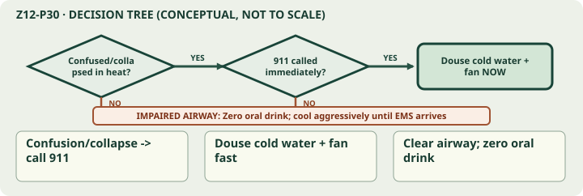

Z12-P30 · Extreme environments · New manuscript
Initiate immediate rapid cooling and 911 activation for suspected heat stroke
Execute immediate life-saving lay cooling while activating emergency medical services when heat stroke is suspected.
When it applies · Layperson emergency response to suspected heat stroke outdoors or during heat waves.
Equipment · Phone/communicator, shade, coldest available water (cool water dousing/immersion if safe), wet cloths and fan/airflow.

Actions
- Call 911 IMMEDIATELY the moment confusion, slurred speech, stumbling, collapse or seizure appears in heat—minutes of extreme core temperature cause irreversible organ and brain injury.[T05, T09, T02]
- Begin rapid active cooling ON SITE right away ("cool first, transport safely per dispatch"): move into shade/AC, remove excess outer gear, douse continuously with cold/cool water (or immerse trunk/limbs in cool water if safe and supervised keeping airway clear) and fan vigorously to drive evaporative cooling.[T05, T09, E26]
- Apply cold wet cloths or ice packs wrapped thinly at neck, armpits and groin while monitoring airway and breathing continuously; give NO oral fluids to confused, vomiting or drowsy patients.[T05, T09, T01]
Failure recognition · Waiting forty minutes in hot sun for an ambulance to arrive before pouring water over a confused heat-stroke victim.[T05, T09]
Verify · Confirm 911 is activated, rapid water-and-airflow cooling is actively underway, airway stays clear and zero fluids are forced into an impaired mouth.[T05, T09, T02, ED]
Stop or change course · Continue active cooling until EMS takes over or the person becomes fully alert and shivering—follow 911 dispatcher directions strictly for breathing/CPR changes.[T05, T09, T02]
Evidence and editorial notes
- E26 · FEMA / Ready.gov · Extreme Heat (current web edition)
- Section: Extreme Heat > Stay Safe in Extreme Heat · Conditions: Prolonged heat waves and high overnight temperatures
Support: Use ventilated shade, hydration, light breathable clothing, and cooling centers when available; monitor vulnerable companions continuously for heat exhaustion or heat stroke.
Limitations: Shaded tarps reduce radiant load but cannot replace medical cooling when core temperature rises. · Conflicting evidence: None; aligns with CDC-HEAT and NWS-HEAT.
Editorial note: Supports hot-weather shelter orientation and heat-stress stop conditions. · Specialist reviewer: Heat safety and emergency medicine
Primary source · checked 2026-11-24 - T01 · American Red Cross · First Aid Steps (current web edition)
- Section: First Aid Steps > Check the scene; check the person · Conditions: Lay responder in United States; assess safety before contact
Support: Check scene safety, responsiveness, breathing and immediately life-threatening conditions.
Limitations: Lay guidance does not replace advanced clinical or rescue protocols. · Conflicting evidence: None; universal first-response opening gate.
Editorial note: Anchors scene-safety-first rule across Z01. · Specialist reviewer: EMS and wilderness medicine
Primary source · checked 2026-11-24 - T02 · American Red Cross · First Aid Steps (current web edition)
- Section: First Aid Steps > Call 9-1-1 · Conditions: Lay emergency response to unresponsiveness, abnormal breathing or severe bleeding
Support: Activate EMS and get needed equipment. Follow dispatcher directions and act within training.
Limitations: Remote locations may delay EMS arrival, requiring sustained stabilization after activation. · Conflicting evidence: None; aligns with NPS-E.
Editorial note: Mandates early emergency activation and dispatcher adherence. · Specialist reviewer: EMS and wilderness medicine
Primary source · checked 2026-11-24 - T05 · CDC NIOSH · Heat-related Illnesses (current web edition)
- Section: Heat stroke > First aid · Conditions: Heat exposure and altered mental status
Support: Heat illness may be life-threatening. Seek emergency care for suspected heat stroke and start cooling promptly.
Limitations: Delays in active cooling worsen neurologic outcomes. · Conflicting evidence: None; aligns with CDC-HEAT.
Editorial note: Core heat-emergency escalation rule. · Specialist reviewer: Emergency and wilderness medicine
Primary source · checked 2026-11-24 - T09 · CDC NIOSH · Heat-related Illnesses (current web edition)
- Section: Heat stroke > Symptoms and First aid · Conditions: Suspected heat stroke after exertion or heat exposure
Support: Confusion, slurred speech or loss of consciousness can indicate heat stroke. Call 911 and cool the person promptly.
Limitations: Exertional heat stroke can occur even in moderate ambient temperatures during heavy effort. · Conflicting evidence: None; aligns with T05.
Editorial note: Triggers immediate emergency call and cooling stop condition. · Specialist reviewer: Emergency and wilderness medicine
Primary source · checked 2026-11-24
Source lineage · CDC NIOSH heat stroke first aid and ARC; new manuscript · Classification · New manuscript.